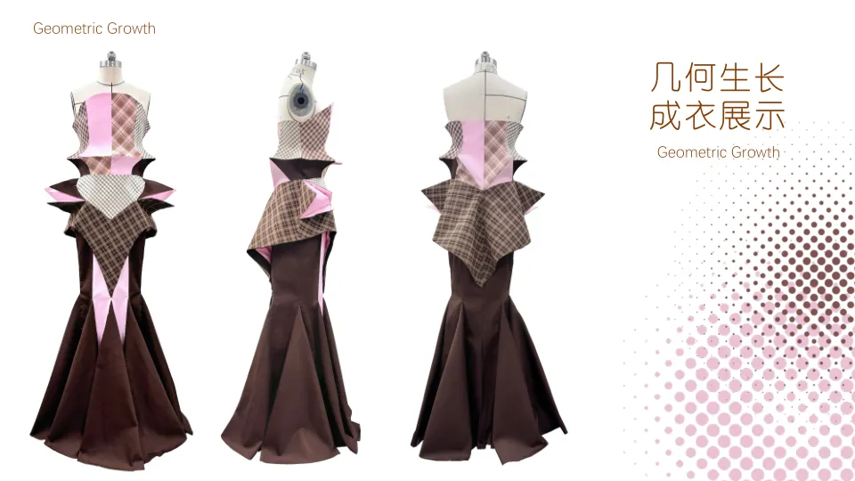

《几何生长》· 成衣展示精选作品 / Selected work
01 — 0701 / 几何生长
GEOMETRIC GROWTH让生命力
成为廓形
以春笋为隐喻，把积蓄与迸发的生长状态转化为服装的几何形态。作品集呈现灵感、面料、效果图、白坯、成衣及细节，能完整看到概念落地的过程。
02 / 美丽“监狱”
BEAUTIFUL PRISON谁定义
美丽？
当人无法自由选择美，美就可能成为一种束缚。系列以布料下若隐若现的骨骼、撑架和铁链呈现身体与审美规训之间的关系。
03 / 女王的棋局
QUEEN'S GAMBIT人物成长的
服装语言
把人物从孤儿院、与养母相伴、混乱放纵到成为“白女王”的经历分为四个阶段，分析颜色和服装元素，再发展服装设计与成衣。影视剧图片用于分析参照，网页精选自身设计页。
04 / 图案与配饰
PATTERN & ACCESSORIES悲风画扇
女巫派对
《悲风画扇》从“人生若只如初见”提取秋扇意象，以刀剑、枯萎向日葵和铜锈色研究图案，并探索服装应用。《女巫派对》以眼睛、苹果和女巫意象表达女性自我观照。
05 / 产品企划
PROJECT IN PROGRESS失界
持续在途
以“外套需要两栖穿着”为切入点，关注从通勤到运动、从城市到山野的场景转换。企划把冲锋衣和软壳作为核心品类，在功能需求与日常造型之间建立连续的穿着系统。
四个波段属于同一季度的叙事推进；当前为企划与毕业设计的整合阶段。
秩序之下
始行于然 · 日常中的出发
临界地带
级控急行 · 节奏加速
失序空间
末日徒行 · 张力释放
边界之外
行尽穷时 · 回归平静
06 / 穿着体验研究
RESEARCH PRACTICE从数据到
产品建议
参与冲锋衣、跑步短袖与裤装等产品的多轮穿着测评，逐步承担方案设计、问卷、受试者招募、实验、数据分析和修改建议等工作。
研究方向为“青年女性轻户外软壳衣设计与结构优化”。产品分析同时结合服装样本拆解和版片数字化，帮助把穿着反馈转成可讨论的结构问题。
记录体验
收集动作、体感与主观反馈，确认真实穿着场景中的问题。
分析数据
观察体表温湿度的阶段变化，结合穿着条件解读结果。
提出建议
把体验与数据联系到面料、版型和结构优化方向。
07 / 礼服制作研究
COURSE PROJECT从款式分析
到成衣
课程选取 SHUSHUTONG 礼服款式进行分析和制作，梳理胸衣结构、衬辅料、面料与缝制过程，完成成衣展示。此项目为课程制作研究，原款式品牌署名保留。
关于 / About
LI XUAN北京服装学院服装艺术与工程学院硕士在读，服装造型与应用方向。本科毕业于武汉纺织大学服装与服饰设计专业。既关注具有鲜明观念的服装造型，也关注运动户外产品企划，以及结构与穿着体验之间的关系。
- 研究
- 青年女性轻户外软壳衣设计与结构优化
- 方向
- 运动 / 户外产品企划、服装设计
- 方法
- 用户洞察、品类与波段规划、主客观测评、样本拆解